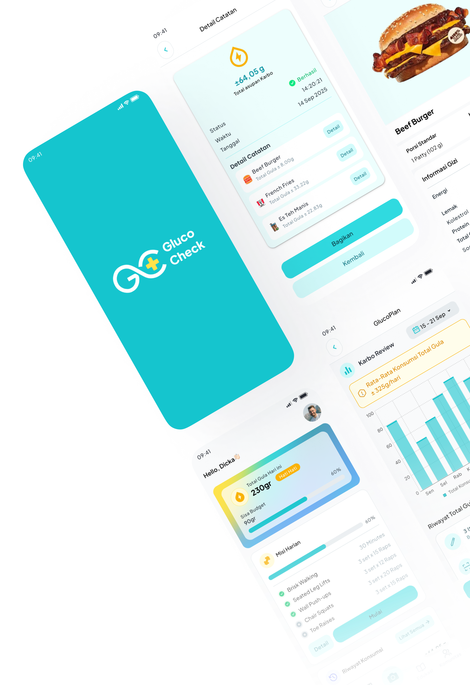
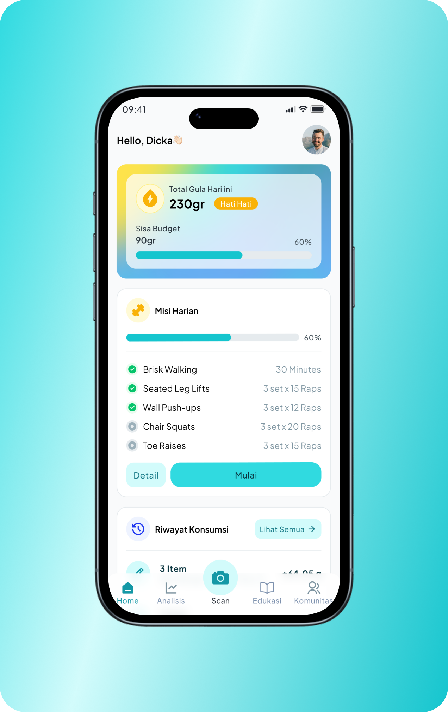
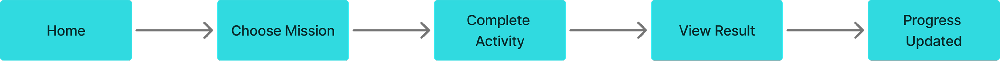
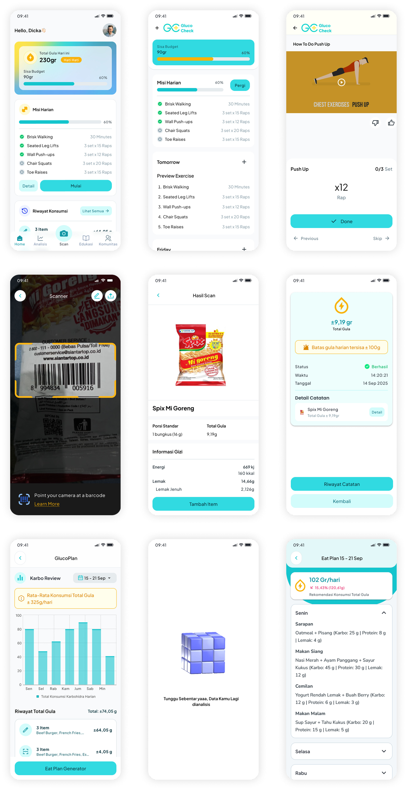

AI-Powered Diabetes Self Monitoring for Better Daily Control

What Is GlucoCheck?
GlucoCheck is an AI-powered mobile application designed to help users monitor and manage their daily sugar intake to reduce the risk of diabetes.
The app transforms raw health data into structured insights through smart logging, visual progress tracking, personalized recommendations, and gamified motivation systems to support long-term healthy behavior change.
Contribution
Research and UI Design
Tools

Problem Statement
Derived from student survey and interviews
How might we design a non-invasive, user-friendly, and digitally integrated glucose monitoring solution that encourages consistent tracking and supports preventive health management for individuals with diabetes?
Research
To understand how young adults manage their daily sugar intake and identify gaps in existing tracking solutions, interviews were conducted with target users. The insights were synthesized into key findings and persona development.
User Target
Young adults aged 18–30 who frequently consume sugary beverages and packaged food but lack awareness and consistency in tracking their sugar intake.
- Difficulty understanding nutrition labels
- Inconvenient and inconsistent tracking
- Low motivation without progress visibility or support
- A simplified way to understand sugar content
- A fast and effortless logging system
- Clear daily limits with real-time progress feedback
- Gentle motivational support without feeling overwhelmed
User Persona
Nabila is a fourth-semester university student who enjoys hanging out with friends and frequently consumes packaged drinks and sweet beverages. Although she has not been diagnosed with diabetes, she feels concerned due to her family history and lifestyle habits. She wants to adopt a healthier lifestyle but struggles to consistently monitor and control her daily sugar intake.
- Maintain a healthier lifestyle starting at a young age
- Reduce long-term diabetes risk
- Control daily sugar consumption more consistently
- Receive practical and realistic health guidance
- Balance social life and health
- Frequently consumes sugary drinks during social gatherings
- Struggles to interpret nutrition labels
- Rarely tracks sugar intake consistently
- Has irregular eating habits due to busy schedule
- Underestimates health risks because she feels "still young"
Solution
User Flow
The user flow was designed to ensure a simple and seamless experience from tracking sugar intake to monitoring daily progress.
Daily Sugar Tracking Flow
Gamification Flow

Meal Plan Flow
High-Fidelity Design
The high-fidelity design of GlucoCheck focuses on clarity, simplicity, and motivation. The interface was designed to make sugar tracking feel effortless while providing clear visual feedback to encourage consistent and preventive health behavior.

Reflection
Through this project, I learned the importance of simplifying complex health data into clear and actionable insights. Designing GlucoCheck reinforced how visibility, ease of use, and subtle motivation can influence consistent user behavior.
If given more time, I would conduct usability testing to further validate the interaction flow and improve the engagement experience.